19世纪几何学和代数学的变革，给20世纪的数学带来飞速的发展和空前的繁荣。现代数学不再只是几何、代数和分析这几门传统学科，而成为分支众多、结构庞杂的知识体系，并仍在不断地发展和变化。数学的特点不只是严密的逻辑性，更添加了另外两条，即高度的抽象性和广泛的应用性，并因此形成了现代数学研究的两个大的范围，即纯粹数学和应用数学。其中后者的一部分发展出计算机科学，撇开它的重要性，仅从为人类所提供的就业岗位来说，它就超过了所有其他数学分支的总和。
纯粹数学最初主要受两个因素推动，即集合论的渗透和公理化方法的应用。集合论本来是由G.康托尔于19世纪后期创立的，曾遭到包括克罗内克等在内的许多数学家的反对，后来因其在数学中的作用越来越明显才获得承认。集合最初是建立在数集或点集之上，不久它的定义范围得以扩大，可以是任何元素的集合，如函数的集合、几何图形的集合等。这就使得集合论作为一种普遍的语言进入数学的不同领域，引起了数学中积分、函数、空间等基本概念的深刻变化，同时刺激了本章将要谈到的数理逻辑中直觉主义与形式主义的进一步发展。
G.康托尔本是圣彼得堡出生的丹麦人，其犹太父母年轻时在俄国经商，生意做到了德国汉堡、英国伦敦乃至美国纽约。他与凯莱一样，可谓在外从商者子女成才的楷模，只不过G.康托尔家在他祖父母那一代就来到了圣彼得堡。11岁那年，G.康托尔随父母迁居德国，在那里度过了一生的绝大部分时光。他在荷兰阿姆斯特丹上了中学，后来又到瑞士苏黎世和德国的几所大学求学，逐渐喜欢上数学并决定以此为职业，尽管他在绘画方面表现出的才能曾使全家为之骄傲。
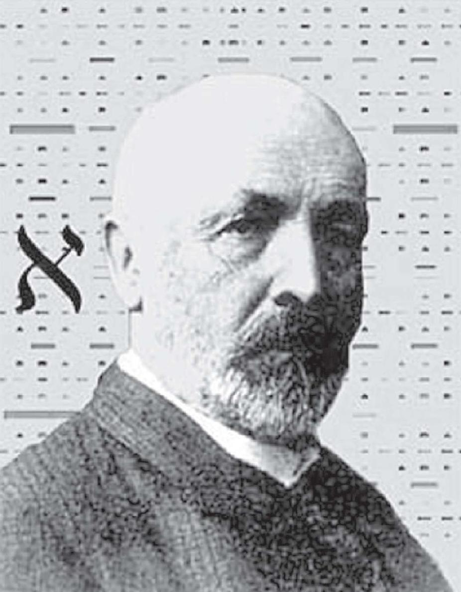
集合论的创始人康托尔
在G.康托尔的眼里，集合是一些对象的总体，不管它们是有限的还是无限的。当运用“一一对应”的方法去研究集合时，他得出了惊人的结果：有理数是可数的，即能与自然数一一对应。他的证明非常有趣，
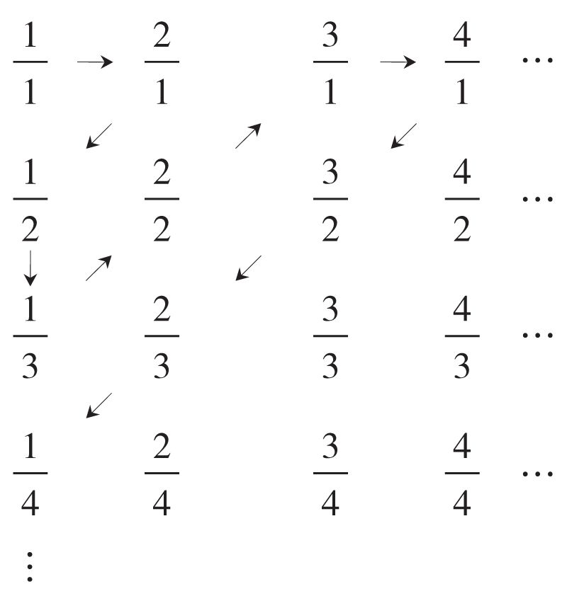
每行以大小次序排列，所有的正有理数均在其中，其中分母为i的在第i行，G.康托尔列出的排列顺序如上图所示。与此同时，他证明了全体实数是不可数的。
不仅如此，G.康托尔还给出了超越数存在性的非构造性证明。事实上，G.康托尔证明了代数数和有理数一样也是可数的，又证明了实数是不可数的。这样一来，由于代数数和超越数的全体构成了实数，超越数不仅存在而且数量比代数数要多得多。对超越数的研究后来成为20世纪数论研究的一道风景。可是，由于G.康托尔认定无限是真实存在的，他受到同行长期的反对和攻击，尤其是柏林大学的犹太教授克罗内克（L.Kronecker，1823—1891），后者不仅是一位杰出的数学家和成功的商人，在科学论战方面也是最有力的斗士。而G.康托尔却软弱无能，虽然真理在他那边，以至于他毕生都在一所三流大学做教授。
G.康托尔为集合论引进了基数的理论，称全体整数的基数为阿列夫零，称后面较大的基数为阿列夫1、阿列夫2，等等（阿列夫是希伯来字母，G.康托尔是犹太人）。也就是说，他对无穷做了分类。他还证明，全体实数集合的基数大于阿列夫零。这就引出了所谓的“康托尔连续统假设”：在阿列夫零与全体实数的基数之间不存在任何别的基数。20世纪初，德国数学家希尔伯特在巴黎国际数学家大会上发表著名的题为“数学问题”演讲时，把这个假设或猜想排在留给20世纪的23个数学问题的第一位（超越数问题排在第7位）。
当G.康托尔发现“数学的肌体”得了重病，古希腊的芝诺传染给它的疾病还没有得到诊治时，他便不由自主地想医治它。可是，他对无穷问题所做的普罗米修斯式的进攻却导致他自己精神崩溃，那时他才40岁。很久以后，他死于德国中部的一家精神病院。在希尔伯特发表演讲的第二年，罗素也谈了他的看法：
芝诺关心过三个问题：无穷小、无穷和连续。每一代最优秀的智者都尝试过解决这些问题，但是确切地说，他们什么也没得到……魏尔斯特拉斯、戴德金和G.康托尔彻底解决了它们，他们的解答清楚得不再留下丝毫怀疑，这可能是这个时代所能夸耀的最伟大的成就……无穷小的问题是由魏尔斯特拉斯解决的，其他两个问题的解决是从戴德金开始，最后由G.康托尔完成的。
公理化的方法早在古希腊时代就被欧几里得发现了，并在其名著《几何原本》中加以应用。众所周知，《几何原本》共建立了5个公设和5个公理。可是，欧几里得构筑的公理体系并不完善。德国数学家希尔伯特重新定义了现代的公理化方法，他指出，“不论这些对象是点、线、面，还是桌子、椅子、啤酒杯，它们都可以成为这样的几何对象，对于它们而言，公理所表述的关系都成立。”
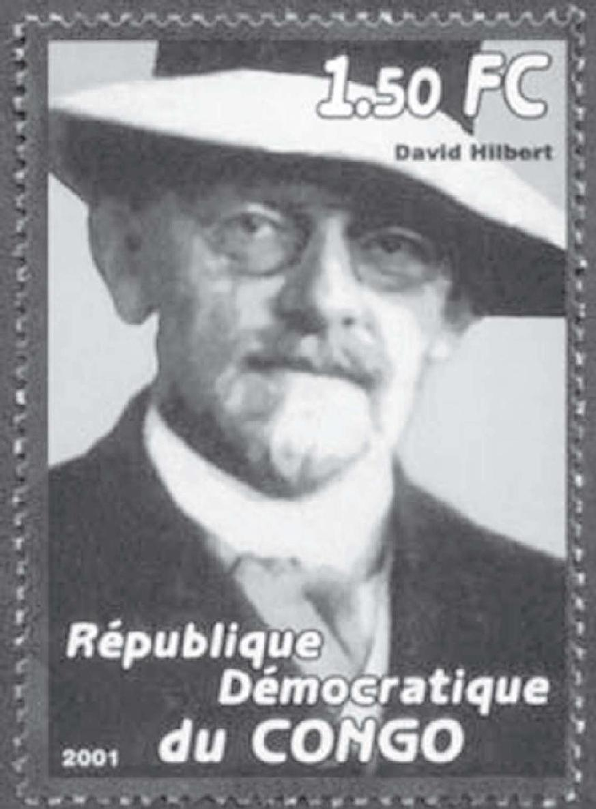
刚果邮票上的希尔伯特
以点、线、面为例，欧几里得给这些对象都赋予描述性的定义，而在希尔伯特眼里它们却都是纯粹抽象的对象，没有特定的具体内容。此外，希尔伯特还考察了各公理之间的相互关系，明确提出了对公理系统的基本逻辑要求，即相容性、独立性和完备性。当然，公理化只是一种方法，不像集合论有丰富的内容。尽管如此，希尔伯特的公理化方法不仅使几何学具备了严密的逻辑基础，而且逐步渗透到数学的其他领域，成为综合、提炼数学知识并推动具体数学研究的强有力的工具。
1861年，希尔伯特出生在东普鲁士的哥尼斯堡郊外，如今属于俄罗斯的版图，周围是波兰、立陶宛和波罗的海，并早已更名为加里宁格勒。虽然在那座城市出生的最伟大的公民是哲学家康德（他的一生都在这座偏远的城市度过），可是希尔伯特却与数学结下了不解之缘。原来流经市区的普莱格尔河分成两支，河上共有7座桥，其中5座把河岸和河中的一座小岛连接起来，于是产生了一个数学问题：假设一个人只能通过每座桥一次，能否把7座桥都走遍？
这个看似简单的问题后来成为拓扑学的出发点，并被瑞士数学家欧拉解决了。巧合的是，欧拉长期的通信对象、数学家哥德巴赫（C.Goldbach，1690—1764）也出生在哥尼斯堡，后者以提出一个著名的猜想（任何一个大于或等于6的偶数必可表示成两个奇素数之和）闻名于世，与这个猜想最接近的结果来自中国数学家陈景润（1966）。不过，直接促使希尔伯特坚定地走上数学之路的却是同城的比他小两岁的赫尔曼·闵可夫斯基（Hermann Minkowski，1864—1909）。赫尔曼出生在俄国的亚力克索塔斯（今立陶宛的考纳斯），8岁随家人移居哥尼斯堡，与希尔伯尔家仅一河之隔。这位天才的犹太少年刚满18岁就赢得了法兰西科学院的数学大奖，比赫尔曼年长6岁的哥哥奥斯卡·闵可夫斯基（Oscar Minkowski，1858—1931）被称为“胰岛素之父”，奥斯卡发现了胰岛素和糖尿病之间的关联。
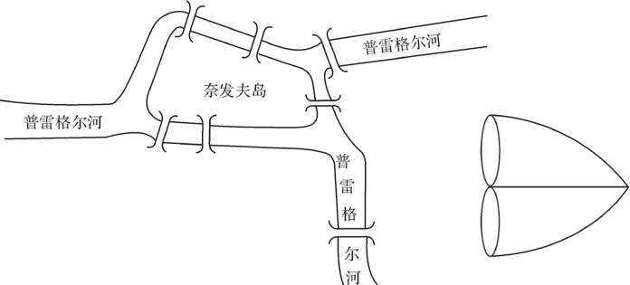
哥尼斯堡七桥游戏的抽象图
与赫尔曼·闵可夫斯基这样一位旷世才俊为伍，希尔伯特的才华不仅没有被埋没，反而得到了磨炼和积淀，并促使他默默奋斗，打下了更为坚实的基础。两人（后成为师兄弟）的友谊持续了四分之一个世纪，从哥尼斯堡一直延伸到哥廷根。赫尔曼·闵可夫斯基后来因患急性阑尾炎英年早逝，希尔伯特则活到了80多岁，成就了一代大师的伟业。1900年，希尔伯特在巴黎国际数学家大会上提出了23个数学问题，为20世纪的数学发展指明了方向。
集合论的观点与公理化的方法在20世纪逐渐成为数学抽象化的范式，它们相互结合之后力量更强，把数学的发展引向更抽象的道路，推动了20世纪上半叶实变函数论、泛函分析、拓扑学和抽象代数这四大抽象数学分支的崛起，堪称4朵抽象数学之花。有意思的是，上一节提到的5位数学家（包括克罗内克）都是德国人，德意志可能是最擅长抽象思维的民族之一。数学当然是最抽象的科学分支了，无论在最抽象的艺术——音乐，还是最抽象的人文社会科学——哲学方面，德国也是人才辈出。
集合论的观点首先引起了积分学的变革，从而推动了实变函数论的建立。19世纪末，分析的严格化迫使许多数学家认真考虑所谓的“病态函数”，例如魏尔斯特拉斯定义的处处连续但处处不可微函数。又如，
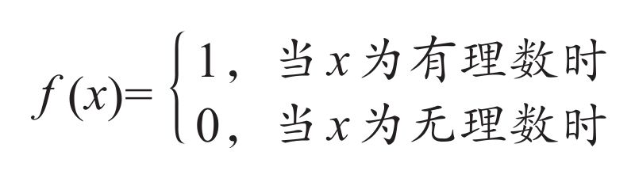
这是由高斯的学生狄利克雷定义的，这个函数处处不连续。在此基础上，数学家们研究了如何把积分的概念推广到更广泛的函数类别中去。
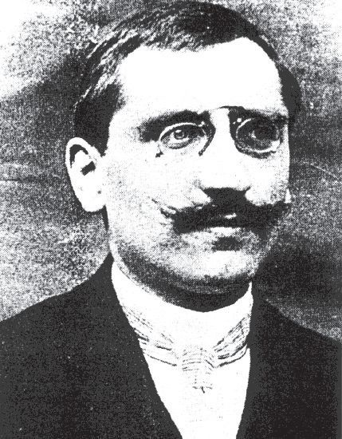
现代分析之父勒贝格
在这方面首先获得成功的是法国数学家勒贝格（H.L.Lebesgue，1875—1941），他用集合论的方法定义了测度（勒贝格测度），作为原先“长度”概念的推广，建立起所谓的“勒贝格积分”，从而把定积分的概念做了推广。在此基础上，他利用微分运算与积分运算的互逆性，重建了牛顿和莱布尼茨的微积分基本定理，从而形成了一个新的数学分支——实变函数论。同样，这一新生事物也受到某些数学权威的斥责，勒贝格公布自己的研究结果以后差不多有10年时间找不到工作。今天，人们把勒贝格以前的分析学称为“经典分析”，而把他以后的分析称为“现代分析”。
除了实变函数论以外，现代分析的另一个重要组成部分是泛函分析。“泛函”可以看成是“函数的函数”，这个词由法国数学家阿达马（J.Hadamard，1865—1963，以率先证明数论中的素数定理闻名）引进，我们在前面讲变分法时已经举过例子了。不少数学家在泛函分析理论方面都有重要建树，其中希尔伯特引进了无穷实数组{a1 ,a2 ,…,an ,…}组成的集合，这里
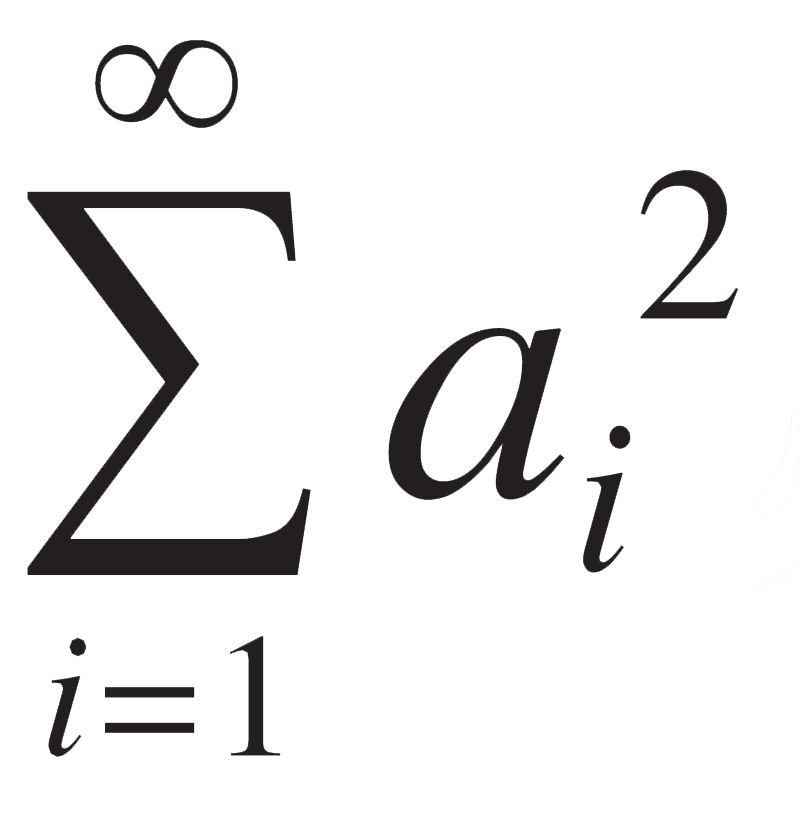
必须是有限数。在定义“内积”等概念和运算法则之后，他建立了第一个无限维空间，即所谓的“希尔伯特空间”。10年以后，波兰数学家巴拿赫（S.Banach，1892—1945）又建立了更大的“赋范线性空间”（巴拿赫空间）概念，用“范数”替代内积来定义距离和收敛性等，极大地拓展了泛函分析的研究领域，同时真正做到空间理论的抽象化。与此同时，函数概念也进一步扩充和抽象化，最有代表性的便是广义函数论的诞生，这方面我们仅举一个例子，英国物理学家狄拉克 [1] （P.A.M.Dirac，1902—1984）定义了如下函数
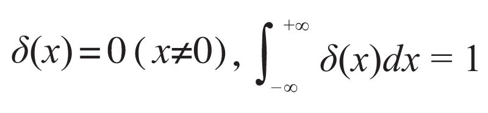
这类函数虽然有悖传统，但在物理学中却十分常见。也正因为如此，泛函分析的观点和方法后来被广泛地应用到其他科学甚至是工程技术领域中。
在集合论的观点帮助建立实变函数论和泛函分析的同时，公理化方法也在向数学领域渗透，其中最有代表性的结果就是抽象代数的形成。自从伽罗华提出群的概念以后，群的类别就从有限群、离散群发展到了无限群、连续群。代数对象也在扩大，进一步产生了其他代数系统，如环（ring）、域（field）、格（lattice）、理想（ideal）等。此后，代数学研究的中心就转移到了代数结构上，这种结构由集合元素之间的若干二元关系合成运算组成，具有以下特点：一是集合的元素必须是抽象的，二是运算法则是通过公理来规定的。
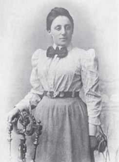
抽象代数的奠基人诺特
一般认为，德国女数学家诺特（E.Noether，1882—1935）在1921年发表的《环中的理想论》是抽象代数的开端，她是这个领域最有建树的数学家之一，她的弟子也遍布世界。诺特被视为迄今为止最伟大的女数学家，也就是说，超过了在她之前的4位著名的女数学家，即古希腊的希帕蒂娅、近代意大利的阿涅西（M.G.Agnesi，1718—1799）、法国的热尔曼（S.Germain，1776—1831）和俄国的柯瓦列夫斯卡娅。尽管如此，由于性别歧视，诺特在哥廷根大学很长时间都当不上讲师，到纳粹政府上台时，年过半百的她还不是教授，到美国以后也只是在女子学院任教授。
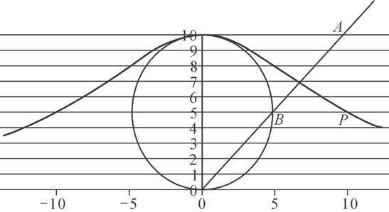
阿涅西箕舌线
最后，我们要谈的是拓扑学，德裔美国数学家外尔（H.Weyl，1885—1955）说过，拓扑天使和代数魔鬼为占有每一个数学地盘而展开了壮观的斗争。由此可见这两门学科的重要性，相比而言，拓扑学有比抽象代数更早的渊源和更有趣的例子，比如哥尼斯堡七桥问题（1736），地图四色问题（1852），以及莫比乌斯带（1858）。拓扑学研究几何图形的连续性质，即在连续变形（拉伸、扭曲但不能割断和黏合）的情况下保持不变的性质。拓扑学这个词是由高斯的一个学生引进的（1847），其希腊文原意是“位置的学问”。它虽然最初属于几何学，但其两大分支却分别是代数拓扑学和点集拓扑学。
点集拓扑学又名一般拓扑学，它把几何图形看作点的集合，同时把整个集合看作一个空间。数学家们从“邻域”这个概念出发，引进连续、连通、维数等一系列概念，再加上紧致性、可分性和连通性等性质，建立了这门学科。它也有一些有趣的实例，比如，在地球的北极每一个方向都是朝南的，这本是经纬度的一种缺陷；地球上任何时刻总是至少有一个地方（台风中心）没有风。这两个完全不同的事实对应于拓扑学中的“不动点定理”：n维单形到它自身的连续变换，至少有一个不动点。
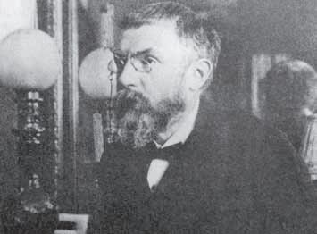
征服者而非殖民者：庞加莱
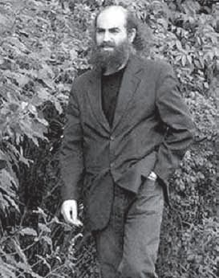
俄罗斯数学家佩雷尔曼，因证明庞加莱猜想而获得2006年的菲尔兹奖
代数拓扑学的奠基人是法国数学家庞加莱（H.Poincaré，1854—1912），正如墙壁用砖砌成，他将几何图形分割成有限个相互连接的小图形。他定义了所谓的高维流形、同胚和同调，后来的数学家又发展了同调论和同伦论，并把拓扑问题转化为抽象代数问题。这个领域最早的一个著名定理是由笛卡尔（1635）提出后又被欧拉（1752）发现的，即任何没有洞的多面体的顶点数加上面数再减去棱数等于2。还有一个“庞加莱猜想”（1904），即任意一个三维的单连通闭流形必与一个三维球面同胚。曾有人悬赏100万美元以求证明这个猜想。
1854年，即黎曼拓展非欧几何学的那一年，庞加莱出生在法国东北部城市南锡的一个显赫家族。庞加莱有着超常的智力，却不幸在5岁时患上白喉症，从此变得体弱多病，不能流畅地用话语表达自己的思想。但他依然喜欢各种游戏，尤其是跳舞，他读书的速度也十分惊人，能准确持久地记住读过的内容，还擅长文学、历史、地理、自然史等。他对数学的兴趣产生得比较晚，大约是在15岁，不过很快就显露出非凡的才华。19岁那年，庞加莱进入巴黎综合理工学院。
庞加莱从未在一个研究领域做过久的逗留，一位同行戏称他是“征服者，而不是殖民者”。从某种意义上讲，整个数学领域都是庞加莱的“殖民地”（数学领域以外的贡献也难以计数），但他对拓扑学的贡献无疑最为重要。庞加莱猜想的证明及其推广，即四维和四维以上空间的情形使得三位数学家前后各相隔20年分别获得菲尔兹奖（1966、1986、2006），这在数学史上被传为佳话。殊为难得的是，庞加莱还是天才的数学普及者，其平装本的通俗读物被译成多种文字，在不同的国度和阶层得到广泛传播，就如同后来的理论物理学家、《时间简史》的作者史蒂芬·霍金（Stephen Hawking，1942—）那样。
不同的是，庞加莱还是一位哲学家，他的著作《科学与假设》《科学的价值》《科学与方法》均产生了巨大影响。他是唯心主义哲学的约定论的代表人物，认为公理可以在一切可能的约定中进行选择，但需以实验事实为依据，并避开任何矛盾。同时，他反对无穷集合的概念，反对把自然数归结为集合论，认为数学最基本的直观概念是自然数，这又使他成为直觉主义的先驱者之一。庞加莱相信艺术家和科学家之间在创造力方面的共性，相信“只有通过科学与艺术，文明才能体现出价值”。
四维空间是非欧几何学的一种特殊形式，当人们仍在辩论非欧几何学以及违反欧几里得第五公设的哲学后果时，庞加莱是这样引导我们想象四维世界的，“外在物体的形象被描绘在视网膜上，视网膜上的是一幅二维图，而物体的形象是一幅透视图……”按照他的解释，既然二维面上的形象是从三维面来的投影，那么三维面上的形象可以看作从四维面来的投影。庞加莱建议，可以将第四维描述成画布上接连出现的不同透视图。依照西班牙画家毕加索的视觉天赋，他认为不同的透视图应该在时间的同时性里展示出来，于是就有了《阿维尼翁的少女》（1907）——立体主义的开山之作。
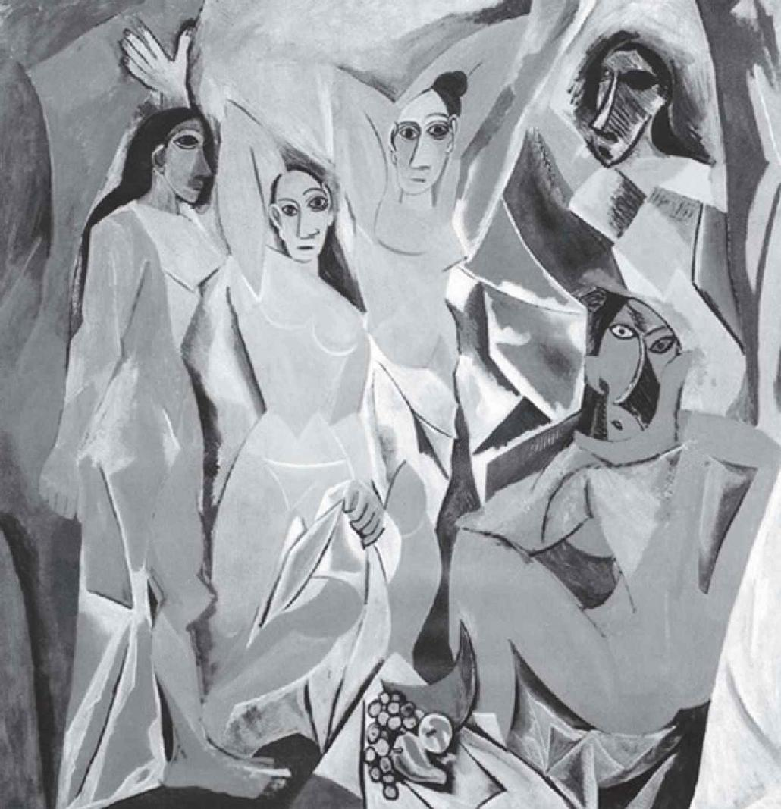
毕加索的《阿维尼翁的少女》
值得一提的是，在《科学与假设》（1902）的众多读者里，有一位叫普兰斯的巴黎保险精算师，在立体主义诞生前夕，他是西班牙画家毕加索的“洗衣舫”艺术家圈子的成员。据说在一段时间里，他的情人和毕加索的情人是同一个。正是在普兰斯的推介下，新几何学成了“充满热情地探索着的”新艺术语言。毕加索的好友、立体主义的阐释者阿波利奈尔总结道，“第四维不是一个数学概念，而是一个隐喻，它包含着新美术的种子。”在他看来，“立体主义用一个无限的宇宙取代了一个以人为中心的有限宇宙。”他还指出，“几何图形是绘画必不可少的，几何学对于造型艺术就如同语法对于写作那样重要。”或许我们可以这样认为，立体主义是文艺复兴以来，绘画和几何又一次美妙的邂逅。
“抽象”（abstract）这个词作为名词在西文里的意思是摘要，它常常被置于一篇数学论文的开头，在标题、作者姓名和单位下面。在艺术领域，它可以被理解成从自然里提取出来的什么东西。正如集合论这类抽象数学的出现曾经引起一番争议，长期以来抽象这个词用在艺术上多少有些贬义，也让人争论不休。自从亚里士多德以来，绘画和雕塑一直被当成模仿的艺术，对此我们在第七章已有过较为详细的论述。
直到19世纪中叶，艺术家才开始倾向于一种新的艺术观念，即绘画是独立存在的一个实体，而并非对别的什么东西的模仿。后来渐渐产生了这样一种艺术：主题变成了附属的或弯曲变形了的东西，以便强调造型或表现手段，那是一种不以表现自然为目的的艺术。塞尚可谓是这种艺术的先驱，他发现眼睛是连续而同时地观看一个景色，他对于自然、人以及绘画的观念，全都展现在对他的故乡普鲁旺斯地区的山川、静物和肖像的绘制中。对塞尚来说，抽象主要是一种方法，目的在于重建独立绘画的自然景致。
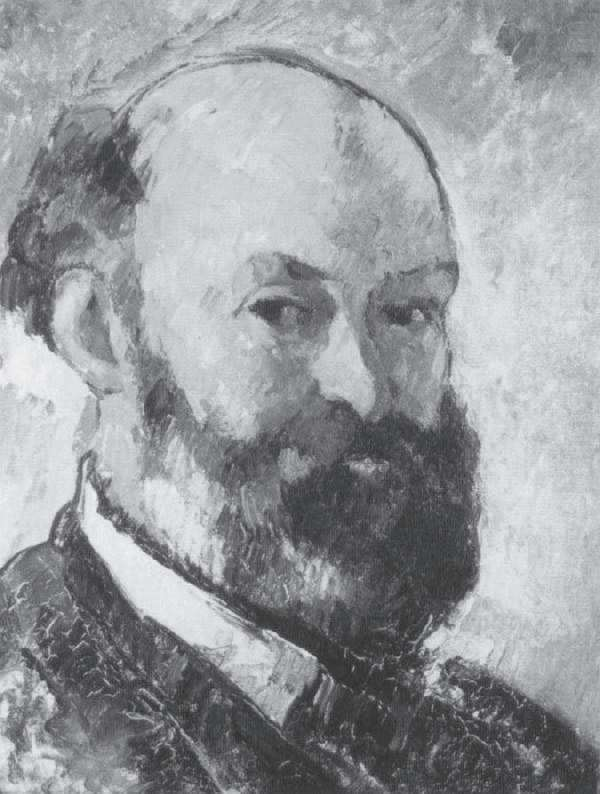
塞尚自画像
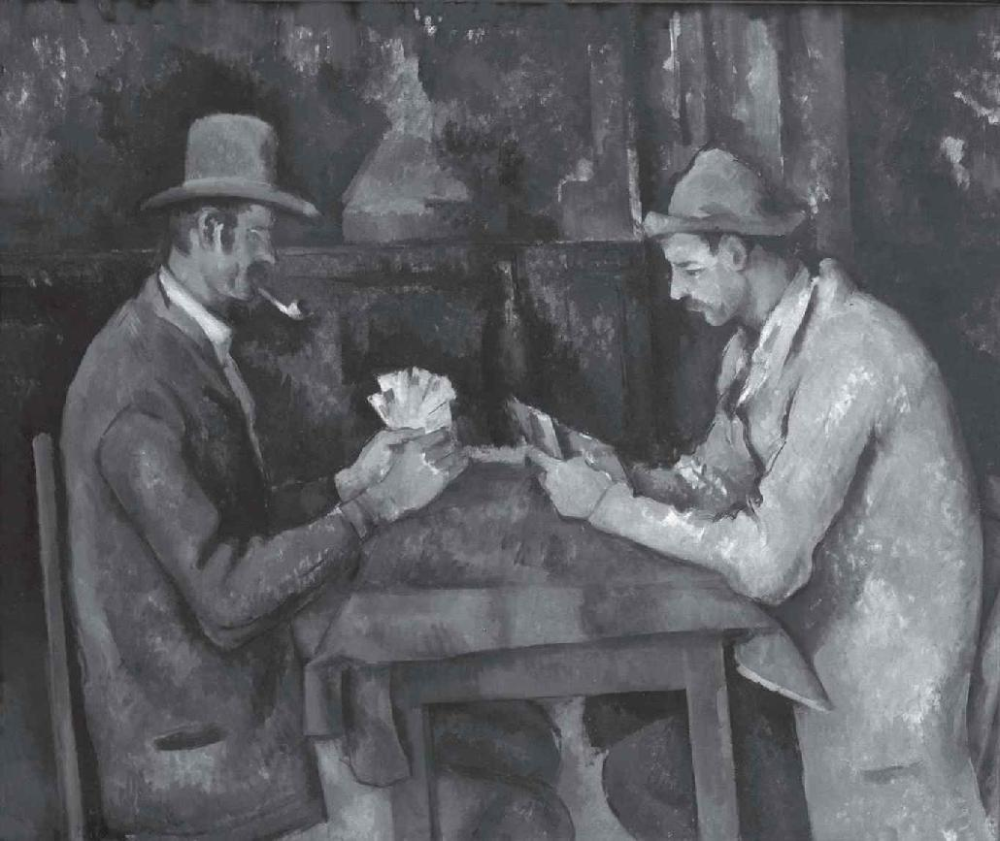
塞尚的《玩纸牌者》
塞尚（P.Cézanne，1839—1906）被誉为“现代艺术之父”，在他的引领下，19世纪末和20世纪初的艺术家们掀起了一波波现代主义的浪潮，典型的有以法国画家马蒂斯（H.Matisse，1869—1954）为代表的野兽派和以西班牙画家毕加索为代表的立体主义。可是，这些画家的作品里仍有一点儿可以辨认的主题，因此它们只能被称为“抽象的”或“半抽象的”艺术。至此，抽象只是一个泛泛的形容词，还不是一个专有名词。
真正与“抽象代数”这个数学专业词汇相对应的应该是“抽象艺术”，它专指那些没有任何可以辨认主题的绘画。俄国画家康定斯基（W.Kandinsky，1866—1944）被视为第一个“抽象画家”。18世纪以来，彼得大帝和叶卡捷琳娜女皇统治的俄国，在长期聘请像伯努利兄弟和欧拉这样的大科学家的同时，也开启了一种赞助艺术的传统，并与西方不断进行着密切的接触，俄国人经常到法国、意大利和德国等地旅行。进入19世纪后，俄国的文学和音乐达到了很高的水平，戏剧和芭蕾也取得了长足的进步。
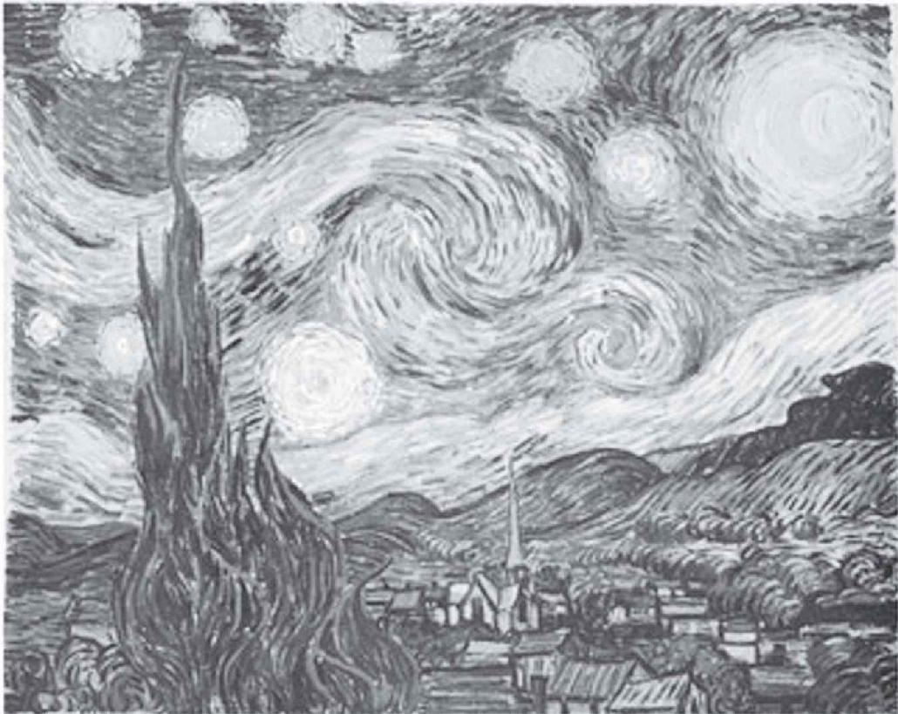
凡·高的《星空》
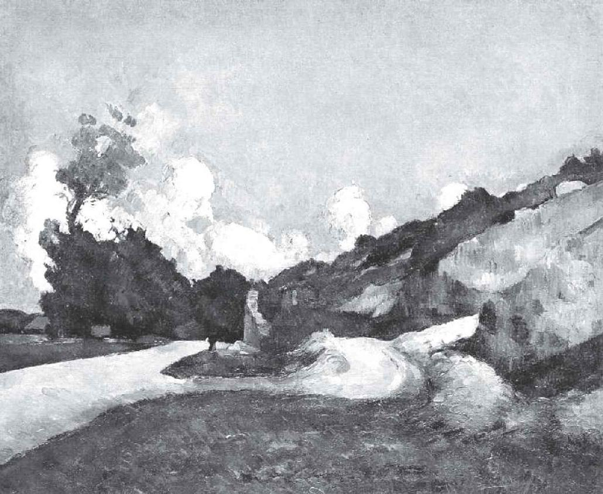
康定斯基的《穆尔诺的风景》
1866年，正好是黎曼去世的那一年，康定斯基出生在莫斯科，几个月以后，波德莱尔也在巴黎去世了。康定斯基家族是来自西伯利亚的茶叶商人，有蒙古贵族的血统，据说康定斯基的祖母是一位中国的蒙古族公主，他的母亲则是地地道道的莫斯科人。康定斯基幼时随父母和姨母去意大利旅行，不久迁居黑海之滨的敖德萨（今属乌克兰）。父母离异后他随姨母生活，在敖德萨上完中学，后来成为钢琴与大提琴的演奏者和业余画家。
20岁那年，康定斯基进入莫斯科大学攻读法律和经济学，直至取得博士学位。其间他仍对绘画保持着极大的兴趣，并在一次去北部的沃洛格达州进行与法律有关的种族史调查时，对当地民间绘画中色彩艳丽的非写实风格产生了强烈的兴趣。1896年，30岁的康定斯基立志成为画家，他毅然放弃了莫斯科大学的助理教授职位，前往德国南方进入慕尼黑的一所美术学院学习，4年后毕业。同学中有比他年轻13岁的瑞士人克利（P.Klee，1879—1940），后来他俩携手成为20世纪的绘画大师。
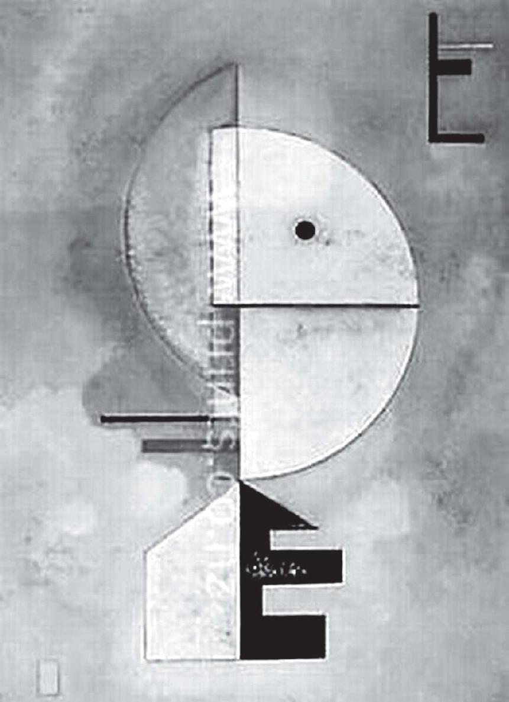
康定斯基的作品
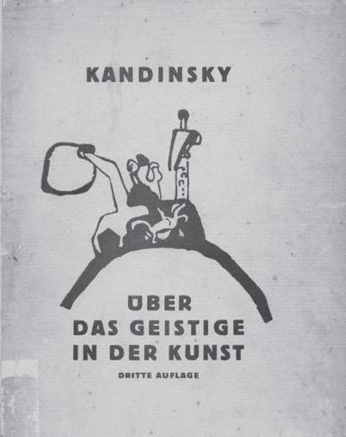
《论艺术的精神》德文版
正是在慕尼黑期间，康定斯基关于非客观物体的或没有实际主题的绘画风格开始形成。经过一番探索，他找到并确立了自己的艺术目标：通过线条和色彩、空间和运动，无须参照可见的自然物体，来表现一种精神上的反应或决断。早年的法学熏陶也帮助康定斯基成为画家中理论水平最高的人，在《论艺术的精神》一书里，他谈到从法国印象派画家马奈（Manet，1832—1883）的作品里第一次察觉到物体的非物质化问题，并不断地吸引着他。自然科学中的革命性进展，也粉碎了他对可触摸感知的物理世界秉持的信念。
从康定斯基身上我们可以感觉到一种神秘主义的内在力量，这是一种精神产品而不是外部景象或手工技巧的产品。他这样写道：“色彩和形式的和谐，从严格意义上讲必须以触及人类灵魂的原则为唯一基础。”在他中年出版的《康定斯基回忆录》里，有这样的一段描述：
最初给我留下深刻印象的色彩是明亮的翠绿、白、洋红、黑，以及褐黄。这些回忆可以追溯到我三岁的时光。我曾在各种不同的物体上观察它们，如今在我眼中那些物体的形状已经远不如色彩那么清晰了。
随着年龄的增长，康定斯基的作品开始向抽象几何的风格演变，以圆和三角形为主要形式，这从其作品的名字也可以看出来，如《几个圆圈》《一个中心》《黄红蓝》《不同的声音》。在他晚年出版的理论著作《康定斯基论点线面》中，他甚至分析了图画的抽象因素的想象效果，认为横线表冷、竖线表热。康定斯基可能没有一幅特别让人印象深刻的代表作，但是任何一幅作品都具有鲜明的形象和艳丽的色彩，会让你立刻辨认出，并带给你愉悦感或引人深思。这一点似乎可以说明，抽象艺术（就像非欧几何学）有着更广阔的表现空间。
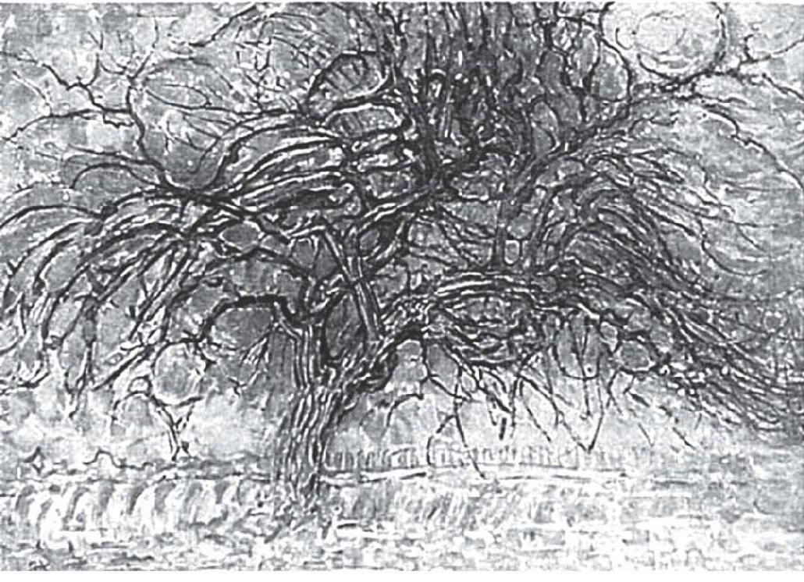
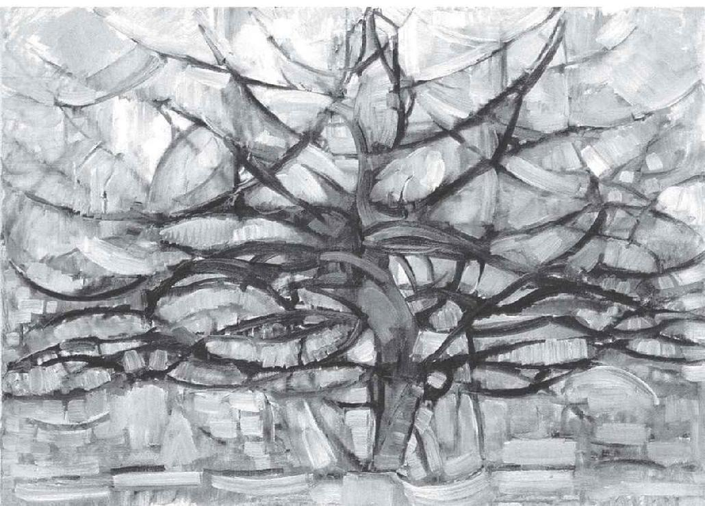
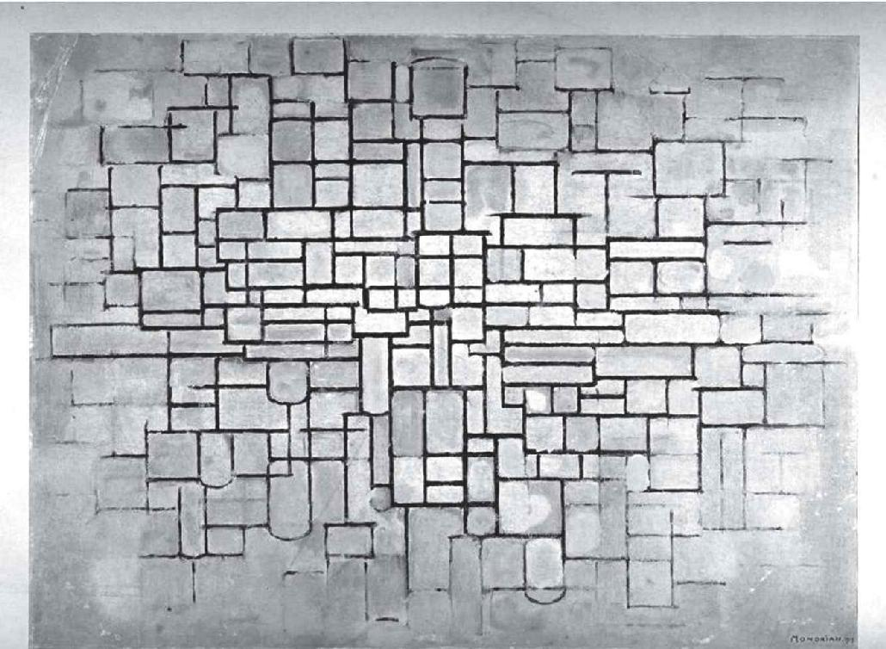
从具象到抽象：蒙德里安的《开花的树》系列
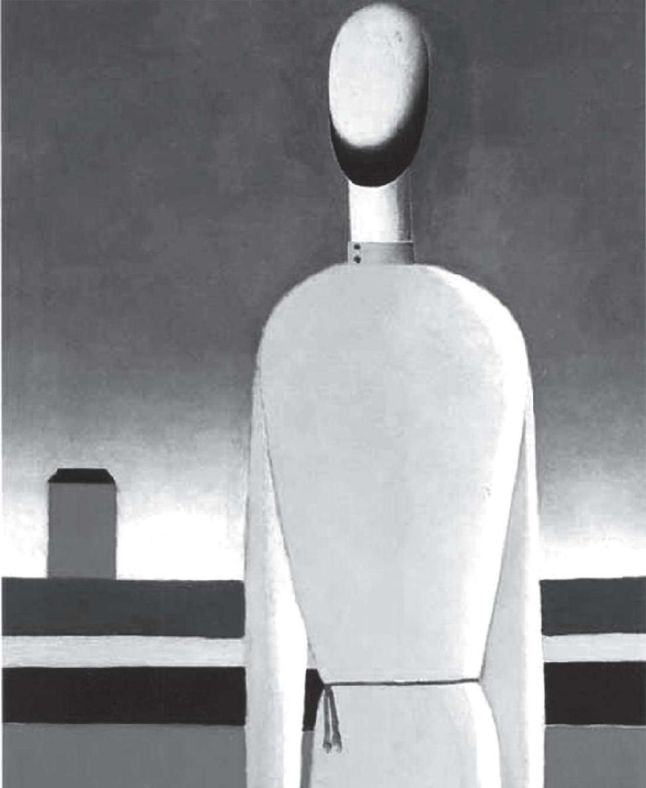
马列维奇的作品
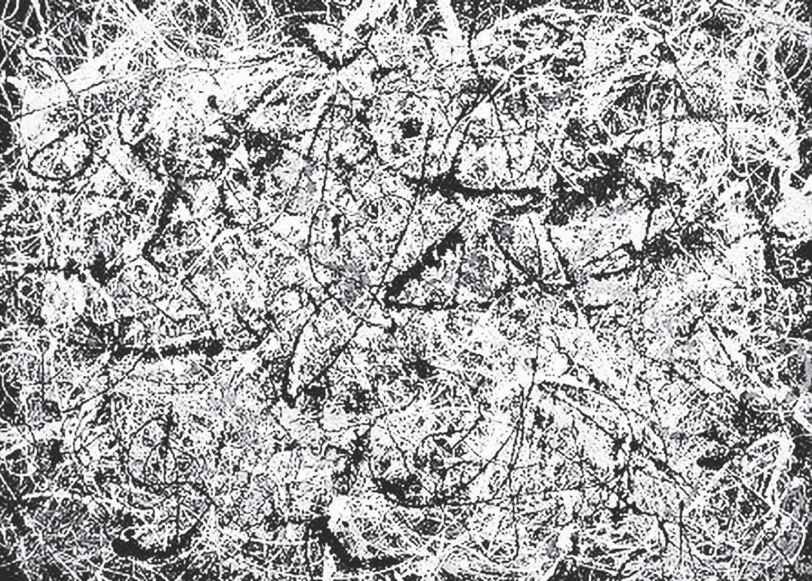
波洛克的行动绘画
除了康定斯基以外，抽象艺术的画家代表至少还有法国的马列维奇（K.Malevich，1878—1935）、荷兰的蒙德里安（P.Mondrian，1872—1944）和美国的波洛克（J.Pollock，1912—1956）。马列维奇把抽象带到一种最后的几何简化图形中，例如，在一张白方块中画上一个斜的黑边方块。马列维奇与康定斯基代表了抽象艺术的两个方向，他和同时代的蒙德里安都直接从立体主义那里得到启示；而波洛克则采用了超现实主义的无意识行动技术，创造了在画布甚至汽车发动机盖上滴落与倾倒颜料的技术，他和从荷兰偷渡到美国的库宁（W.Kooning，1904—1997）是最早扬名世界的新大陆艺术家。
[1] 1928年，狄拉克把相对论引进了量子力学，建立了相对论形式的薛定谔方程，也就是狄拉克方程。当年，他和薛定谔一同获得了诺贝尔物理学奖。